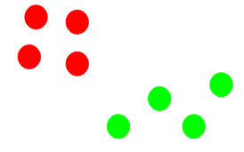
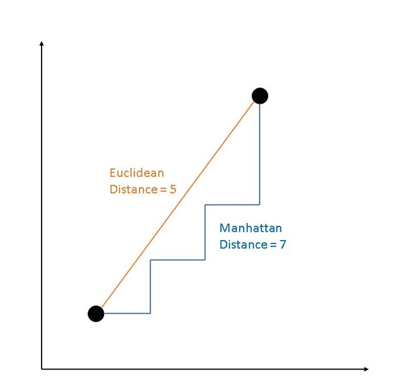
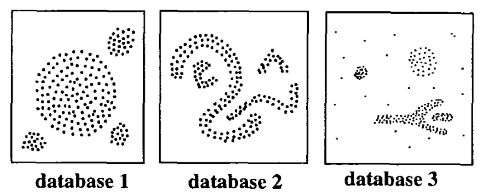

Capítulo 7 MACHINE LEARNING (No Supervisado)

7.1 Clustering
Como ya habiamos mencionado, en el aprendizaje supervisado la idea principal es aprender bajo supervisión, donde la señal de supervisión se nombra como valor objetivo o etiqueta. En el aprendizaje no supervisado, carecemos de este tipo de etiqueta. Por lo tanto, necesitamos encontrar nuestro camino sin ninguna supervisión ni guía. Esto simplemente significa que necesitamos descubrir qué es qué por nosotros mismos.

Aplicaciones de agrupación en clusters
- Segmentación de clientes
Una de las aplicaciones más comunes de la agrupación en clusters es la segmentación de clientes, Esta estrategia abarca todas las sectores, incluidas las telecomunicaciones, el comercio electrónico, los deportes, la publicidad, las ventas, etc.
- Agrupación de documentos
Esta es otra aplicación común de la agrupación. Supongamos que tiene varios documentos y necesita agrupar documentos similares. La agrupación en clústeres nos ayuda a agrupar estos documentos de manera que documentos similares estén en los mismos grupos.
- Segmentación de imagen
También podemos utilizar la agrupación en clusters para realizar la segmentación de imágenes. Aquí, intentamos agrupar píxeles similares en la imagen.
- Motores de recomendación
También se puede utilizar en motores de recomendación. Supongamos que desea recomendar canciones a sus amigos. Puede ver las canciones que le gustaron a esa persona y luego usar la agrupación para encontrar canciones similares.
- Reducción de dimensiones mediante agrupamiento de variables similares
Podemos usar los grupos de K-means para agrupar variables similares y crear un indice de estas variables para entrenar un modelo supervisado sin necesidad de usar todas las variables de un solo grupo.
7.2 K - means
La agrupación en grupos con K-means es uno de los algoritmos de aprendizaje de máquina no supervisados más simples y populares.
K-medias es un método de agrupamiento, que tiene como objetivo la partición de un conjunto de n observaciones en k grupos en el que cada observación pertenece al grupo cuyo valor medio es más cercano.
Un cluster se refiere a una colección de puntos de datos agregadosa a un grupo debido a ciertas similitudes.

7.2.1 Ajuste de modelo: ¿Cómo funciona el algortimo?
- Paso 1: Seleccionar el número de clusters K
El primer paso en k-means es elegir el número de conglomerados, K. Como estamos en un problema de análisis no supervisado, no hay K correcto, existen métodos para seleccionar algún K pero no hay respuesta correcta.
- Paso 2: Seleccionar K puntos aleatorios de los datos como centroides.
A continuación, seleccionamos aleatoriamente el centroide para cada grupo. Supongamos que queremos tener 2 grupos, por lo que K es igual a 2, seleccionamos aleatoriamente los centroides:

- Paso 3: Asignamos todos los puntos al centroide del clúster más cercano.
Una vez que hemos inicializado los centroides, asignamos cada punto al centroide del clúster más cercano:

- Paso 4: Volvemos a calcular los centroides de los clusters recién formados.
Ahora, una vez que hayamos asignado todos los puntos a cualquiera de los grupos, el siguiente paso es calcular los centroides de los grupos recién formados:

- Paso 5: Repetir los pasos 3 y 4.

- Resumen de algoritmo

- Criterios de paro:
Existen tres criterios de paro para detener el algoritmo:
- Los centroides de los grupos recién formados no cambian:
Podemos detener el algoritmo si los centroides no cambian. Incluso después de múltiples iteraciones, si obtenemos los mismos centroides para todos los clústeres, podemos decir que el algoritmo no está aprendiendo ningún patrón nuevo y es una señal para detener el entrenamiento.
- Los puntos permanecen en el mismo grupo:
Otra señal clara de que debemos detener el proceso de entrenamiento si los puntos permanecen en el mismo clúster incluso después de entrenar el algoritmo para múltiples iteraciones.
- Se alcanza el número máximo de iteraciones:
Finalmente, podemos detener el entrenamiento si se alcanza el número máximo de iteraciones. Supongamos que hemos establecido el número de iteraciones en 100. El proceso se repetirá durante 100 iteraciones antes de detenerse.
7.2.2 Implementación en R
library(readr)
library(dplyr)
library(factoextra)
library(ggplot2)
library(patchwork)
Churn <- read_csv("data/Churn.csv")
Churn## # A tibble: 7,043 × 21
## customerID gender SeniorCitizen Partner Dependents tenure PhoneService
## <chr> <chr> <dbl> <chr> <chr> <dbl> <chr>
## 1 7590-VHVEG Female 0 Yes No 1 No
## 2 5575-GNVDE Male 0 No No 34 Yes
## 3 3668-QPYBK Male 0 No No 2 Yes
## 4 7795-CFOCW Male 0 No No 45 No
## 5 9237-HQITU Female 0 No No 2 Yes
## 6 9305-CDSKC Female 0 No No 8 Yes
## 7 1452-KIOVK Male 0 No Yes 22 Yes
## 8 6713-OKOMC Female 0 No No 10 No
## 9 7892-POOKP Female 0 Yes No 28 Yes
## 10 6388-TABGU Male 0 No Yes 62 Yes
## # … with 7,033 more rows, and 14 more variables: MultipleLines <chr>,
## # InternetService <chr>, OnlineSecurity <chr>, OnlineBackup <chr>,
## # DeviceProtection <chr>, TechSupport <chr>, StreamingTV <chr>,
## # StreamingMovies <chr>, Contract <chr>, PaperlessBilling <chr>,
## # PaymentMethod <chr>, MonthlyCharges <dbl>, TotalCharges <dbl>, Churn <chr>Churn <- Churn %>%
mutate(tenure_scale = scale(tenure, center = T, scale = T) ,
MonthlyCharges_scale = scale(MonthlyCharges, center = T, scale = T) )
df <- Churn %>%
select(tenure_scale, MonthlyCharges_scale) %>%
na.omit()
km6 <- kmeans(df, centers = 6, nstart = 5)
fviz_cluster(km6, data = df, repel = F)
set.seed(123)
wss_plot <- fviz_nbclust(df, kmeans, method = "wss")
set.seed(123)
sil_plot <- fviz_nbclust(df, kmeans, method = "silhouette")
wss_plot + sil_plot
Churn <- Churn %>% bind_cols(km6[1])
glimpse(Churn)## Rows: 7,043
## Columns: 24
## $ customerID <chr> "7590-VHVEG", "5575-GNVDE", "3668-QPYBK", "7795-C…
## $ gender <chr> "Female", "Male", "Male", "Male", "Female", "Fema…
## $ SeniorCitizen <dbl> 0, 0, 0, 0, 0, 0, 0, 0, 0, 0, 0, 0, 0, 0, 0, 0, 0…
## $ Partner <chr> "Yes", "No", "No", "No", "No", "No", "No", "No", …
## $ Dependents <chr> "No", "No", "No", "No", "No", "No", "Yes", "No", …
## $ tenure <dbl> 1, 34, 2, 45, 2, 8, 22, 10, 28, 62, 13, 16, 58, 4…
## $ PhoneService <chr> "No", "Yes", "Yes", "No", "Yes", "Yes", "Yes", "N…
## $ MultipleLines <chr> "No phone service", "No", "No", "No phone service…
## $ InternetService <chr> "DSL", "DSL", "DSL", "DSL", "Fiber optic", "Fiber…
## $ OnlineSecurity <chr> "No", "Yes", "Yes", "Yes", "No", "No", "No", "Yes…
## $ OnlineBackup <chr> "Yes", "No", "Yes", "No", "No", "No", "Yes", "No"…
## $ DeviceProtection <chr> "No", "Yes", "No", "Yes", "No", "Yes", "No", "No"…
## $ TechSupport <chr> "No", "No", "No", "Yes", "No", "No", "No", "No", …
## $ StreamingTV <chr> "No", "No", "No", "No", "No", "Yes", "Yes", "No",…
## $ StreamingMovies <chr> "No", "No", "No", "No", "No", "Yes", "No", "No", …
## $ Contract <chr> "Month-to-month", "One year", "Month-to-month", "…
## $ PaperlessBilling <chr> "Yes", "No", "Yes", "No", "Yes", "Yes", "Yes", "N…
## $ PaymentMethod <chr> "Electronic check", "Mailed check", "Mailed check…
## $ MonthlyCharges <dbl> 29.85, 56.95, 53.85, 42.30, 70.70, 99.65, 89.10, …
## $ TotalCharges <dbl> 29.85, 1889.50, 108.15, 1840.75, 151.65, 820.50, …
## $ Churn <chr> "No", "No", "Yes", "No", "Yes", "Yes", "No", "No"…
## $ tenure_scale <dbl[,1]> <matrix[26 x 1]>
## $ MonthlyCharges_scale <dbl[,1]> <matrix[26 x 1]>
## $ cluster <int> 2, 6, 4, 3, 4, 5, 5, 2, 5, 6, 4, 2, 1, 1, 5, …7.3 Partitioning Around Medoids (PAM)
El algoritmo k-medoides es un enfoque de agrupamiento relacionado con el agrupamiento de k-medias para particionar un conjunto de datos en k grupos o clústeres. En k-medoides, cada grupo está representado por uno de los puntos de datos pertenecientes a un grupo. Estos puntos son nombrados medoides.
El término medoide se refiere a un objeto dentro de un grupo para el cual la disimilitud promedio entre él y todos los demás miembros del clúster son mínimos. Corresponde a el punto más céntrico del grupo. Estos objetos (uno por grupo) pueden ser considerado como un ejemplo representativo de los miembros de ese grupo que puede ser útil en algunas situaciones.
Este algotimo es una alternativa sólida de k-medias. Debido a que este algoritmo es menos sensible al ruido y los valores atípicos, en comparación con k-medias, pues usa medoides como centros de conglomerados en lugar de medias. El uso de medias implica que la agrupación de k-medias es muy sensible a los valores atípicos, lo cual puede afectar gravemente la asignación de observaciones a los conglomerados.

El método de agrupamiento de k-medoides más común es el algoritmo PAM (Partitioning Around Medoids, Kaufman & Rousseeuw, 1990).
7.3.1 Implementación en R
library(cluster)
k_mediods <- pam(df, 6)
pam_plot <- fviz_cluster(
k_mediods,
nstart = 5,
ggtheme = theme_minimal()) +
ggtitle('K-Medoids Plot') +
theme(legend.position = "bottom")
pam_plot
7.3.2 Algoritmo PAM
El algoritmo PAM se basa en la búsqueda de k objetos representativos o medoides entre las observaciones del conjunto de datos.
Después de encontrar un conjunto de k medoides, los grupos se construyen asignando cada observación al medoide más cercano.
Posteriormente, cada medoide m y cada punto de datos no medoide seleccionado se intercambian y se calcula la función objetivo.
La función objetivo corresponde a la suma de las disimilitudes de todos los objetos a su medoide más cercano.
El paso de intercambio intenta mejorar la calidad de la agrupación mediante el intercambio entre objetos seleccionados (medoides) y objetos no seleccionados. Si la función objetivo puede reducirse intercambiando un objeto seleccionado con un objeto no seleccionado, entonces el se realiza el intercambio. Esto se continúa hasta que la función objetivo ya no puede ser disminuida. El objetivo es encontrar k objetos representativos que minimicen la suma de disimilitudes de las observaciones con su objeto representativo más cercano.
Como se mencionó anteriormente, el algoritmo PAM funciona con una matriz de disimilitud y para calcular esta matriz, el algoritmo puede utilizar dos métricas:
La distancia euclideana, que es la raíz de la suma de cuadrados de las diferencias;
Y la distancia de Manhattan, que es la suma de distancias absolutas.

Nota: En la práctica, se debería obtener resultados similares la mayor parte del tiempo, utilizando cualquiera de estas distancias mencionadas. Si lo datos contienen valores atípicos, distancia de Manhattan debería dar resultados más sólidos, mientras que la distancia euclidiana se vería influenciada por valores inusuales.
7.4 DBSCAN
DBSCAN (agrupación espacial basada en densidad y aplicación con ruido), es un algoritmo de agrupamiento basado en densidad, que puede utilizarse para identificar agrupaciones de cualquier forma en un conjunto de datos que contenga ruido y valores atípicos.
La idea básica detrás del enfoque de agrupamiento basado en densidad se deriva de un método de agrupamiento intuitivo. Por ejemplo, mirando la siguiente figura, uno puede identificar fácilmente cuatro grupos junto con varios puntos de ruido, debido a las diferencias en la densidad de puntos.

Los clústeres son regiones densas en el espacio de datos, separadas por regiones de menor densidad de puntos. El algoritmo DBSCAN se basa en esta noción intuitiva de “clústeres” y “ruido.” La idea clave es que para cada punto de un grupo, la vecindad de un determinado radio debe contener al menos un número mínimo de puntos.
Los métodos de particionamiento vistos anteriormente son adecuados para encontrar grupos de forma esférica o grupos convexos. En otras palabras, ellos funcionan bien solo para grupos compactos y bien separados. Además, también son severamente afectados por la presencia de ruido y valores atípicos en los datos.
Desafortunadamente, los datos de la vida real pueden contener:
Grupos de forma arbitraria como los como se muestra en la siguiente figura (grupos ovalados, lineales y en forma de “S”).
Muchos valores atípicos y ruido.

El gráfico anterior contiene 5 grupos y valores atípicos, que incluyen:
- 2 clústeres ovalados
- 2 clústeres lineales
- 1 clúster compacto
Dados los datos “multishapes” del paquete factoextra, el algoritmo de k-medias tiene dificultades para identificar estos grupos con formas arbitrarias.
Para ilustrar esta situación, el siguiente código calcula k-medias en el conjunto de datos mencionado.

Sabemos que hay 5 grupos de en los datos, pero se puede ver que el método de k-medias identifica incorrectamente estos 5 grupos.
7.4.1 Algoritmo
El objetivo es identificar regiones densas, que se pueden medir por la cantidad de objetos cerca de un punto dado.
Se requieren dos parámetros importantes para DBSCAN:
epsilon (“eps”): Define el radio de vecindad alrededor un punto x.
puntos mínimos (“MinPts”): Es el número mínimo de vecinos dentro del radio “eps”.
Cualquier punto x en el conjunto de datos, con un recuento de vecinos mayor o igual que MinPts, es marcado como un punto central.
Decimos que x es un punto fronterizo, si el número de sus vecinos es menos que MinPts, pero pertenece a la vecindad de algún punto central z.
Finalmente, si un punto no es ni un núcleo ni un punto fronterizo, entonces se denomina punto de ruido o parte aislada.
La siguiente figura muestra los diferentes tipos de puntos (puntos centrales, fronterizos y atípicos) usando MinPts = 6.
Aquí x es un punto central porque los vecinos \(s_{\epsilon}(x) = 6\), y es un punto fronterizo ya que \(s_{\epsilon}(y) < \text{ MinPts}\), pero pertenece a la vecindad del punto central x. Finalmente, z es un punto de ruido.

Un clúster basado en densidad se define como un grupo de puntos conectados por densidad. El algoritmo de agrupamiento basado en densidad (DBSCAN) funciona de la siguiente manera:
- Para cada punto \(x_i\), calcular la distancia entre \(x_i\) y los otros puntos. Hallar todos los puntos vecinos dentro de la distancia eps del punto de partida (\(x_i\)). Cada punto, con un vecino cuenta mayor o igual a MinPts, se marca como punto central o visitado.
- Para cada punto central, si aún no está asignado a un clúster, crear un nuevo clúster. Encuentrar recursivamente todos sus puntos densamente conectados y asignarlos a el mismo grupo que el punto central.
- Iterar a través de los puntos no visitados restantes en el conjunto de datos.
Los puntos que no pertenecen a ningún clúster se tratan como valores atípicos o ruido.
7.4.2 Implementación en R
Utilizaremos el paquete fpc para calcular DBSCAN. También es posible utilizar el paquete dbscan, que proporciona una reimplementación más rápida del algoritmo en comparación con el paquete fpc.
library("fpc")
set.seed(123)
db <- fpc::dbscan(df, eps = 0.15, MinPts = 5)fviz_cluster(
db,
data = df,
stand = FALSE,
ellipse = FALSE,
show.clust.cent = FALSE,
geom = "point",
palette = "jco",
ggtheme = theme_minimal()
)
Nota: La función fviz_cluster() usa diferentes símbolos de puntos para los puntos centrales (es decir, puntos semilla) y puntos fronterizos. Los puntos negros corresponden a valores atípicos.
Puede verse que DBSCAN funciona mejor para estos conjuntos de datos y puede identificar el conjunto correcto de clústeres en comparación con los algoritmos de k-medias.
Los resultados del algoritmo se pueden ver de la siguiente manera
print(db)## dbscan Pts=1100 MinPts=5 eps=0.15
## 0 1 2 3 4 5
## border 31 24 1 5 7 1
## seed 0 386 404 99 92 50
## total 31 410 405 104 99 51En la tabla anterior, los nombres de las columnas son el número de grupo. El grupo \(0\) corresponde a valores atípicos (puntos negros en el gráfico DBSCAN).
7.4.3 Ventajas de DBSCAN
A diferencia de K-medias, DBSCAN no requiere que el usuario especifique el número de clústeres que se generarán.
DBSCAN puede encontrar cualquier forma de clústeres. No es necesario que el grupo sea circular.
DBSCAN puede identificar valores atípicos.